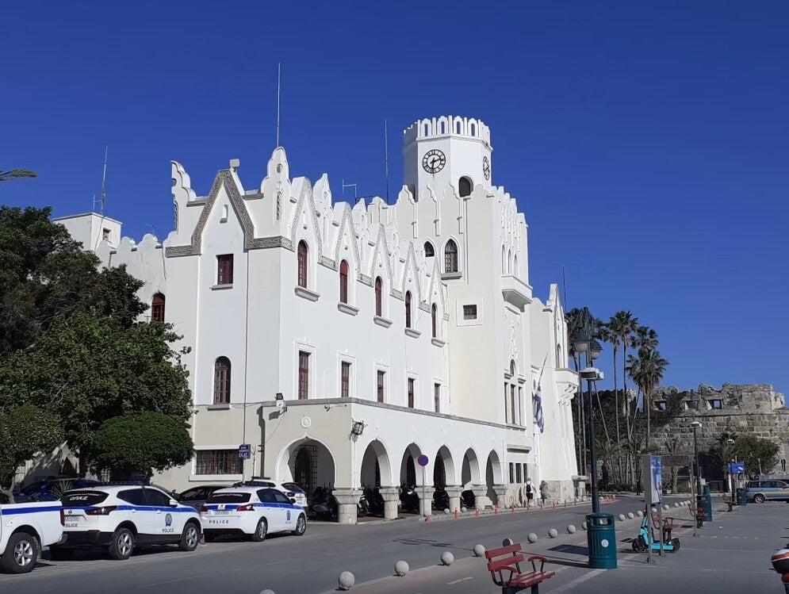
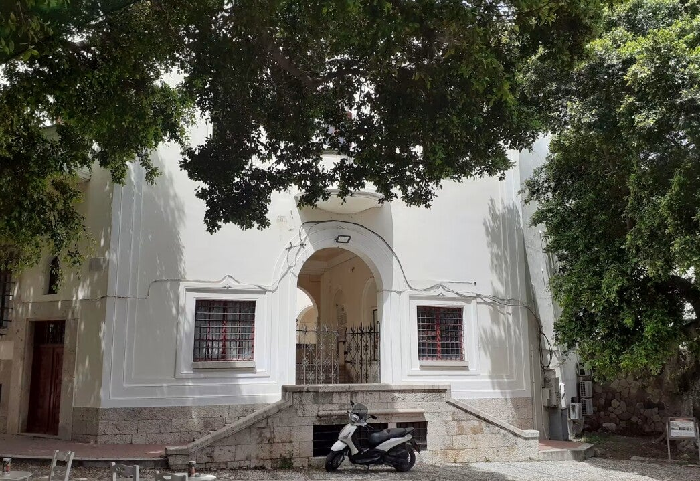
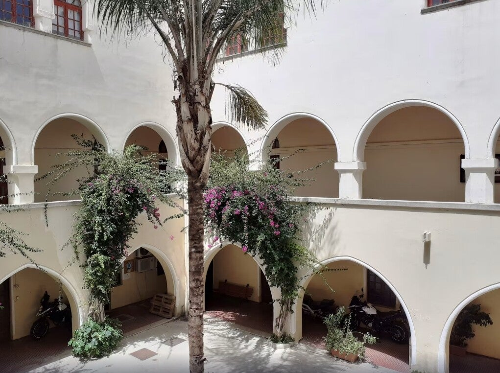
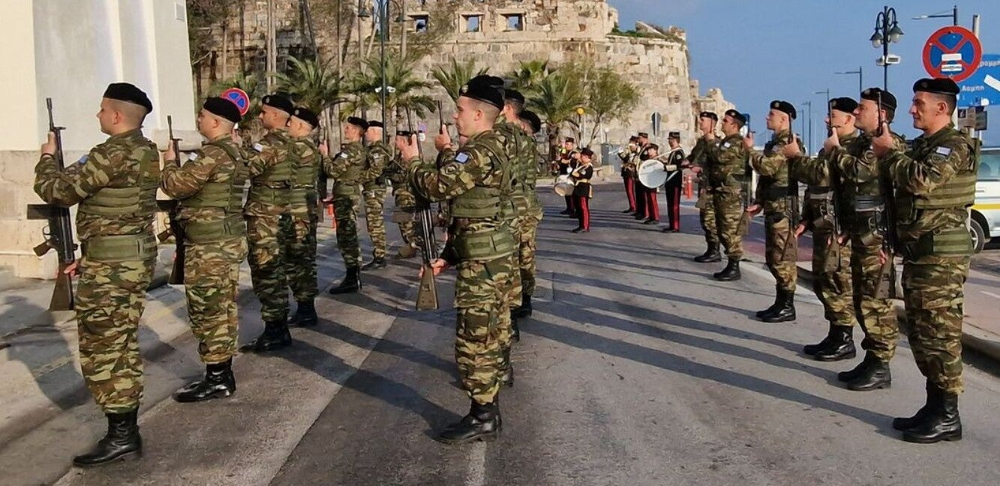

Palazzo di Giustizia
Italiaans gerechtshof uit 1928 – nog steeds rechtbank en politie, met de Latijnse spreuk “we zijn allen slaven van de wet”.
Gerechtshof
Palazzo di Giustizia betekent Gerechtshof of Justice Palace. De Italianen bouwden het in 1928 tijdens hun bezetting. Het diende als residentie voor gouverneurs en huisvestte het gerechtshof.
“Legum servi sumus omnes”
Aan de achterkant, gericht op Plateia Platanou, staat de inscriptie: Legum servi sumus omnes – “We zijn allen slaven van de wet”. Een symbool van Italiaanse macht uit die tijd.

Na 1933 en 1947
Na de aardbeving van 1933 bleef het grotendeels intact. Na de overdracht aan Griekenland in 1947 werd het de zetel van het huidige gerechtshof. Vandaag zitten er nog steeds het gerechtshof en de politie.
Vlagceremonie
Elke zondag hijst het leger de Griekse vlag bij zonsopgang en zonsondergang: soldaten in uniform, vlag hijsen en het volkslied. Een kort, formeel ritueel van nationale trots.

Gevel
Detail
GebouwBezoeken
Van buitenaf altijd te zien. Binnen is het een werkend gerechts- en politiegebouw – niet bedoeld als museum.